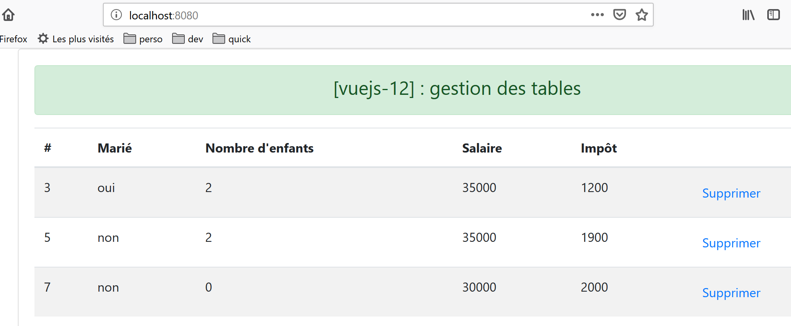
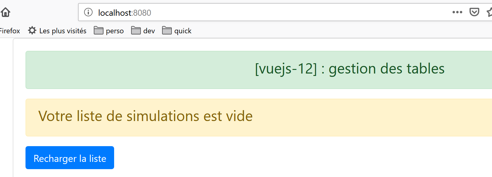
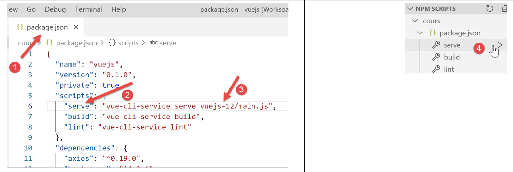
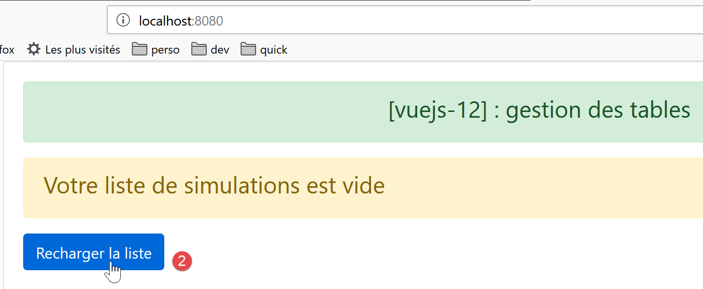
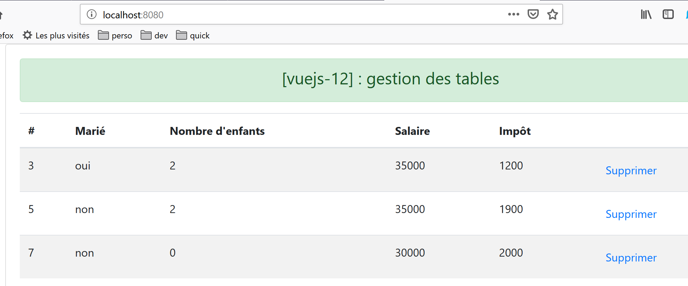

14. 项目 [vuejs-12]：HTML 表格管理
[vuejs-12] 项目的目录结构如下：

14.1. 主脚本 [main.js]
主脚本恢复到了早期项目中的状态：
// imports
import Vue from 'vue'
import App from './App.vue'
// plugins
import BootstrapVue from 'bootstrap-vue'
Vue.use(BootstrapVue);
// bootstrap
import 'bootstrap/dist/css/bootstrap.css'
import 'bootstrap-vue/dist/bootstrap-vue.css'
// configuration
Vue.config.productionTip = false
// instanciation projet [App]
new Vue({
name: "app",
render: h => h(App),
}).$mount('#app')
14.2. 主视图 [App]
主视图 [App] 的代码如下：
<template>
<div class="container">
<b-card>
<!-- message -->
<b-alert show variant="success" align="center">
<h4>[vuejs-12] : gestion des tables</h4>
</b-alert>
<!-- table component -->
<Table @supprimerLigne="supprimerLigne" :lignes="lignes" @rechargerListe="rechargerListe" />
</b-card>
</div>
</template>
<script>
import Table from "./components/Table";
export default {
// nom
name: "app",
// composants utilisés
components: {
Table
},
// état interne
data() {
return {
// liste des simulations
lignes: [
{ id: 3, marié: "oui", enfants: 2, salaire: 35000, impôt: 1200 },
{ id: 5, marié: "non", enfants: 2, salaire: 35000, impôt: 1900 },
{ id: 7, marié: "non", enfants: 0, salaire: 30000, impôt: 2000 }
]
};
},
// méthodes
methods: {
// suppression d'une ligne
supprimerLigne(index) {
// eslint-disable-next-line
console.log("App supprimerLigne", index);
// suppression ligne à la position [index]
this.lignes.splice(index, 1);
},
// rechargement de la table des lignes
rechargerListe() {
// eslint-disable-next-line
console.log("App rechargerListe");
// on régénère la liste des lignes
this.lignes = [
{ id: 3, marié: "oui", enfants: 2, salaire: 35000, impôt: 1200 },
{ id: 5, marié: "non", enfants: 2, salaire: 35000, impôt: 1900 },
{ id: 7, marié: "non", enfants: 0, salaire: 30000, impôt: 2000 }
];
}
}
};
</script>
评论
- 主视图显示了一个 [Table] 组件（第 9、15、21 行）；
- 第 9 行：[Table] 组件接受 [:rows] 参数，该参数表示要在 HTML 表格中显示的行。这些行由代码第 27–31 行定义；
- 第 9 行：[Table] 组件可触发两个事件：
- [deleteRow]：通过指定行索引来删除一行（第 38 行）；
- [reloadList]：用于重新生成第27–31行中的列表。实际上，我们将看到用户可以删除部分已显示的行；
- 第 38–43 行：负责处理 [deleteRow] 事件的方法。它接收待删除行的索引作为参数；
- 第 45–54 行：负责处理 [reloadList] 事件的方法。通过修改第 27 行的 [rows] 属性，我们会触发第 9 行 [Table] 组件的更新，因为该组件有一个 [:rows="rows"] 参数；
14.3. [Table] 组件
[Table] 组件如下所示：
<template>
<div>
<!-- empty list -->
<template v-if="lignes.length==0">
<b-alert show variant="warning">
<h4>Votre liste de simulations est vide</h4>
</b-alert>
<!-- reload button-->
<b-button variant="primary" @click="rechargerListe">Recharger la liste</b-button>
</template>
<!-- non-empty list-->
<template v-if="lignes.length!=0">
<b-alert show variant="primary" v-if="lignes.length==0">
<h4>Liste de vos simulations</h4>
</b-alert>
<!-- simulation table -->
<b-table striped hover responsive :items="lignes" :fields="fields">
<template v-slot:cell(action)="row">
<b-button variant="link" @click="supprimerLigne(row.index)">Supprimer</b-button>
</template>
</b-table>
</template>
</div>
</template>
<script>
export default {
// propriétés
props: {
lignes: {
type: Array
}
},
// état interne
data() {
return {
fields: [
{ label: "#", key: "id" },
{ label: "Marié", key: "marié" },
{ label: "Nombre d'enfants", key: "enfants" },
{ label: "Salaire", key: "salaire" },
{ label: "Impôt", key: "impôt" },
{ label: "", key: "action" }
]
};
},
// méthodes
methods: {
// suppression d'une ligne
supprimerLigne(index) {
// eslint-disable-next-line
console.log("Table supprimerLigne", index);
// on passe l'information au composant parent
this.$emit("supprimerLigne", index);
},
// rechargement de la liste affichée
rechargerListe() {
// eslint-disable-next-line
console.log("Table rechargerListe");
// on émet un événement vers le composant parent
this.$emit("rechargerListe");
}
}
};
</script>
评论
该组件有两种状态：
- 它在 HTML 表格中显示列表；
- 或者显示一条提示信息，表明待显示的列表为空；
如果条件 [lines.length!=0] 为真（第 12 行），则显示第一种状态：

若条件 [lines.length==0] 为真（第 4 行），则显示第二种状态。

- [lines] 是该组件的输入参数（第 29–33 行）；
- 第 4–10 行：这里我们没有使用带有 <div> 标签的代码块，而是使用了 <template> 标签。两者的区别在于，生成的 HTML 代码中不会包含 <template> 标签；
- 第 9 行：当 HTML 表格显示的列表为空时，会显示一个刷新按钮。点击该按钮后，将执行第 57–62 行中的 [reloadList] 方法。该方法仅向父组件发送 [reloadList] 事件，指示父组件重新生成 HTML 表格显示的列表；
- 第 12–22 行：当待显示的列表不为空时显示的代码；
- 第 17 行：<b-table> 标签用于生成 HTML 表格。此处使用的属性如下：
- [striped]：行背景色交替显示。偶数行和奇数行分别采用不同的颜色，从而提升可视性；
- [hover]：鼠标悬停的行会变色；
- [responsive]：表格大小会根据显示它的屏幕进行自适应调整；
- [:items]：要显示的项目数组。在此，[rows] 数组作为参数传递给组件（第 30–32 行）；
- [:fields]: 定义 HTML 表格布局的数组（第 37–44 行）；
- [fields] 数组中的每个元素定义 HTML 表格中的一列；
- [label]：指定列标题；
- [key]：指定该列的内容；
- 第 38 行：定义 HTML 表格的第 0 列：
- [#]：是列标题；
- [id]：是其内容。显示行中的 [id] 字段将填充第 0 列；
- 第 39 行：定义 HTML 表格的第 1 列：
- [已婚]：是列标题；
- [married]：是其内容。它将填充第 0 列，对应显示行中的 [married] 字段；
- 第 43 行：定义 HTML 表格的最后一列：
- 该列没有标题；
- 其内容由 [action] 字段定义，该字段在显示的行中并不存在。该键在 [template] 的第 18 行中被引用。因此，该键在此处仅用于标识一列；
- 第 18–20 行：此代码用于定义 HTML 表格的最后一列，即带有 [action] 键的那一列：
<template v-slot:cell(action)="row">
语法 [v-slot:cell(action)] 指代 [action] 键对应的列。当 [fields] 数组语法无法充分描述该列时，此语法可用于定义列。在此，我们希望最后一列包含一个链接，用于从 HTML 表格中删除一行：

在语法 [<template v-slot:cell(action)="row">] 中，名称 [row] 指代表格行。您可以使用任何您想要的名称。我们本可以写成 [<template v-slot:cell(action)="row">]；
- 第 19 行：一个显示为链接的 <b-button> [variant='link']。点击此链接将触发 [supprimerLigne(row.index)] 方法的执行。此处 [row] 是代码第 18 行中 HTML 表格中该行的名称；
- 第 50–55 行：[deleteRow] 方法；
- 第 54 行：将 [deleteRow] 事件连同待删除行的索引一并发送给父组件；
- 第 57–62 行：[reloadList] 方法；
- 第 61 行：将 [reloadList] 事件连同待删除行的索引发送给父组件；
14.4. 运行项目

首次显示的视图如下：

删除第 1 行 [1] 后，视图变为如下所示：

删除所有行后：

点击按钮 [2] 后，列表恢复如下：
